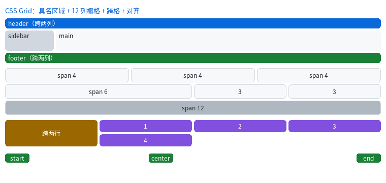
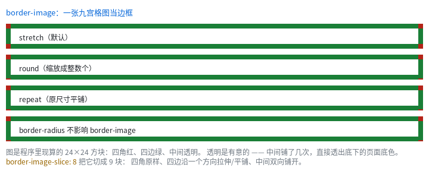

Grid：二维布局，以及 border-image

完整程序：example/29_grid/ 与 example/30_border_image/
前面所有布局都是一维的：block 从上往下堆，flex 沿一条主轴排。表格状的界面 （卡片墙、后台管理页、"页头 / 侧栏 / 正文 / 页脚"）用一维工具拼要套好几层 wrapper —— 而包一层就多一次布局，实测一层 wrapper ≈ 3 个叶子节点的代价。
Grid 是二维的：一次定好列轨道和行轨道，然后把子项"放到格子里"。
.g { display: grid; grid-template-columns: repeat(3, 1fr); gap: 8px; }
1. 轨道：fr 是"剩下的按份数分"
.a { grid-template-columns: 100px 1fr 2fr; } /* 定长 + 两份，共 3 份 */
.b { grid-template-columns: 25% 1fr; } /* 百分比相对容器内容宽 */
.c { grid-template-columns: repeat(4, 1fr); } /* 4 等分 */
.d { grid-template-columns: minmax(60px, auto) 1fr; } /* 至少 60，能大则大 */
分配顺序是先满足下限、再分剩余：
- 每条轨道先拿到自己的
min（px/%直接算，auto先记 0）； max是定长的（minmax的上限）→ 取满；max是auto→ 取这一列里子项的最大内容宽；max是fr→ 把剩下的空间按fr权重分。
fr 的份额是累计推进的，所以 1fr 1fr 1fr 在 100px 里是 33+34+33 ——
三个盒子加起来正好 100，右边界不会差 1 像素。
min-content/max-content关键字目前按auto处理（差异只在"内容比轨道宽"时可见）。
2. 摆放：三种写法
/* ① 自动放置：从左到右、排满换行 */
.item { }
/* ② 线号（1 开始的网格线），可跨格 */
.wide { grid-column: 1 / span 2; } /* 从第 1 条线起，跨 2 格 */
.tall { grid-row: span 2; } /* 行号自动，跨 2 行 */
.last { grid-column: -2 / -1; } /* 负号从末尾数：-1 = 最后一条线 */
/* ③ 具名区域：一屏写完页面骨架 */
.page {
display: grid;
grid-template-areas:
"hd hd"
"sb mn"
"ft ft";
grid-template-columns: 96px 1fr;
grid-template-rows: 20px 1fr 16px;
}
.hd { grid-area: hd; } /* 自动拿到 2 列宽 */
.sb { grid-area: sb; }
.mn { grid-area: mn; }
.ft { grid-area: ft; }
具名区域的语法是"用引号画一张字符地图"：同名的一组格子必须是矩形，
不然构建期就报错（区域名 'a' 在 grid-template-areas 里不是矩形）。
自动放置的规则（与浏览器一致）：
| 子项 | 行为 |
|---|---|
| 行列都没写 | 从游标往后找第一个放得下的空位，排满换行 |
| 只写了列 | 在这一列里往下找第一个空位 |
| 只写了行 | 在这一行里往右找第一个空位 |
| 行列都写了 | 直接放，并且把游标推到它后面 |
grid-auto-flow: row dense 会把游标倒回原点找洞（适合"大小不一的瓦片"）。
3. 对齐：格子里的盒子怎么摆
.g { justify-items: center; align-items: end; } /* 容器级：横向居中、纵向贴底 */
.item { justify-self: start; } /* 单个覆盖 */
默认两个方向都是 stretch —— 子项撑满整个格子（这就是"卡片自动等宽"的来源）。
写 width / height 之后才不撑满，此时 justify-self / align-self 决定位置。
矩阵式记法（和 flex 一样）：
| 横向（列） | 纵向（行） | |
|---|---|---|
| 容器 | justify-items |
align-items |
| 子项 | justify-self |
align-self |
place-items / place-self 是"纵向 + 横向"的简写（本库只取第一个词）。
4. 隐式轨道：多出来的行
只写了列没写行时，多出来的子项会落在隐式行上，高度由内容决定。 想控制它们：
.g { grid-auto-rows: 30px; } /* 隐式行一律 30 高 */
同理 grid-auto-columns 管隐式列（子项写了超出模板的列号时会用到）。
5. border-image：一张图当边框

.box {
border-width: 10px;
border-style: solid;
border-image: url(frame) 8; /* 源图 + 切片 */
border-image-repeat: round; /* stretch（默认）/ repeat / round / space */
}
九宫格的做法：把源图按 slice 切成 9 块 ——
┌────┬──────────┬────┐
│ 角 │ 边 │ 角 │ 角：原样缩放
├────┼──────────┼────┤ 边：沿一个方向拉伸 / 平铺
│ 边 │ 中间 │ 边 │ 中间：双向铺开（源图那儿透明就透出来）
├────┼──────────┼────┤
│ 角 │ 边 │ 角 │
└────┴──────────┴────┘
三个要点：
- 切片是源图上的像素（或百分比），画出来的宽度由
border-width/border-image-width决定； - 写了
border-image就不再画border-style（颜色/线型被顶掉，宽度还在）； border-radius不会让边框图跟着拐弯 —— 这与 CSS 的行为一致。
图片来源与 <img> / background-image 完全相同（ql_ui_register_image() 按名字填像素）：
QLUIImageInput in = { 0 };
in.name = "frame";
in.data = (const uint8_t *)rgba_pixels;
in.len = sizeof(rgba_pixels);
in.w = in.h = 24;
in.format = QL_IMAGE_SRC_RAW;
in.pixel_format = QL_IMAGE_RGBA8888;
ql_ui_register_image(ui, &in);
6. 什么时候该用 Grid
| 想做的事 | 用什么 |
|---|---|
| 一行几个、等宽排列、排满换行 | flex + flex-wrap: wrap 就够，Grid 也行 |
| 列宽要相互对齐（卡片墙 / 表单标签列） | Grid（flex 做不到"第 3 张和第 6 张左边对齐"） |
| "页头 / 侧栏 / 正文 / 页脚" | Grid 具名区域（一行 CSS 说清结构） |
| 某个元素跨两行且高度由两行决定 | Grid grid-row: span 2 |
| 一维菜单、工具栏、按钮组 | flex（更省事） |
性能上的反直觉：Grid 不但不比"嵌套 flex 拼网格"慢，反而更快。 240×160 的 3×3 卡片在 MCU 上实测：嵌套 flex 0.427 ms、Grid 0.229 ms（−46%）， 因为省掉了 wrapper 层。数据见性能诊断。
7. 还不支持的（会报错，不会静默）
| 写法 | 报错 | 替代 |
|---|---|---|
grid-auto-flow: column |
暂不支持 | 用 row，或把行列手动换过来 |
grid-template-columns: [name] 1fr |
不支持具名网格线 | 用 grid-template-areas 的具名区域 |
repeat(auto-fill, …) |
显式轨道数必须能算出来 | 用固定份数 + flex-wrap |
grid: 1fr 1fr / grid-template: … |
不支持简写 | 分开写长写 |
border-image-outset |
边框图不向外扩 |
完整清单见 CSS3 覆盖与裁剪 §11 / §19.1。
上一章：calc() 与布局期算术 ｜ 下一章：性能诊断与 MCU 基准